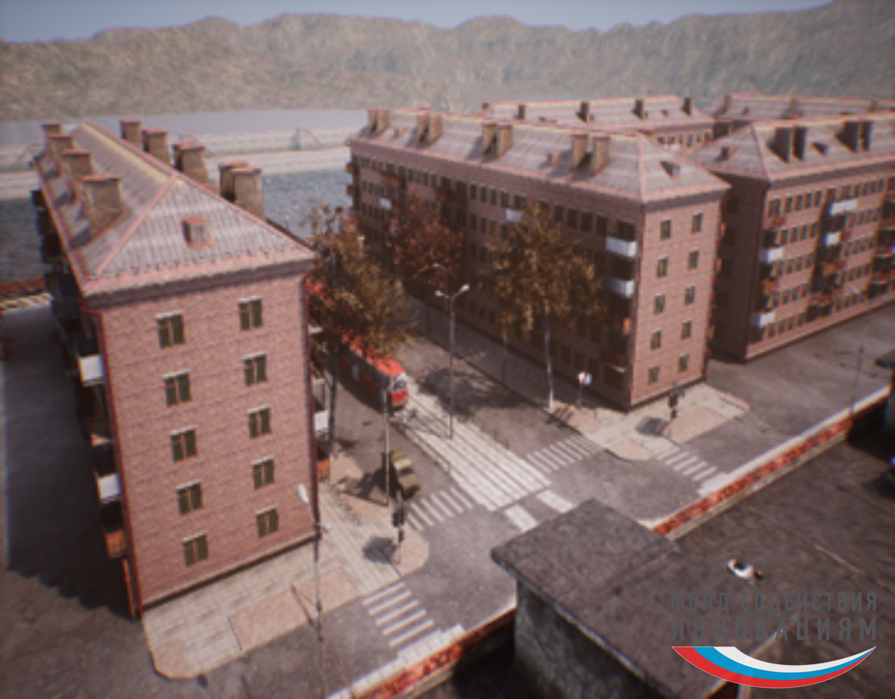
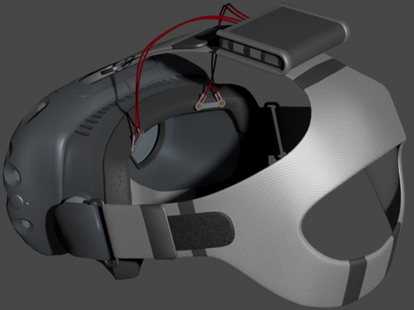
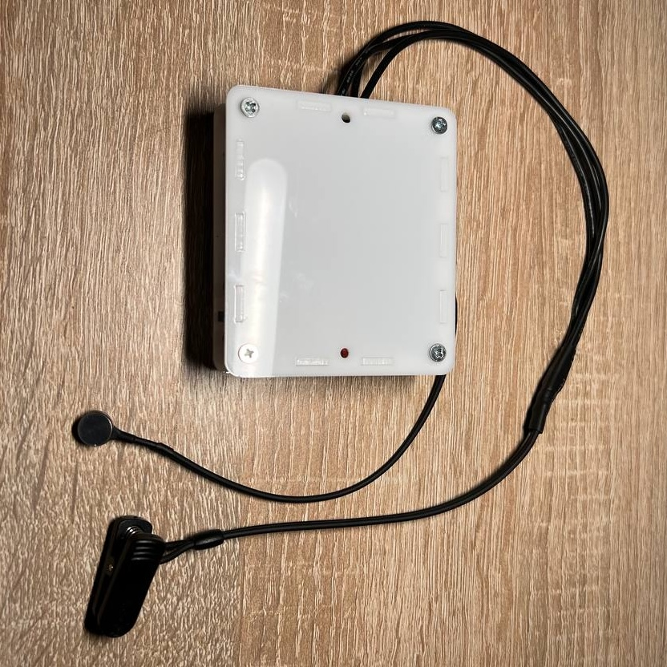
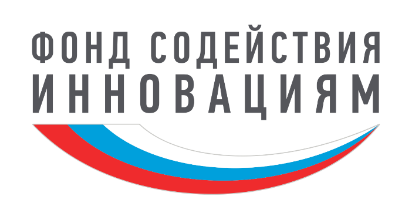
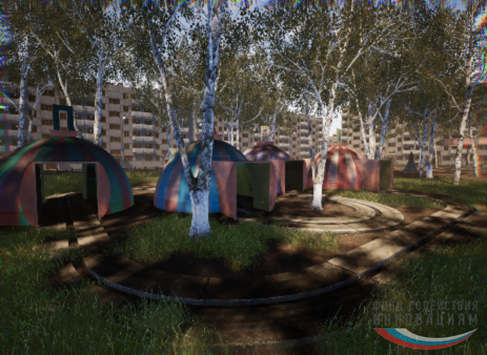
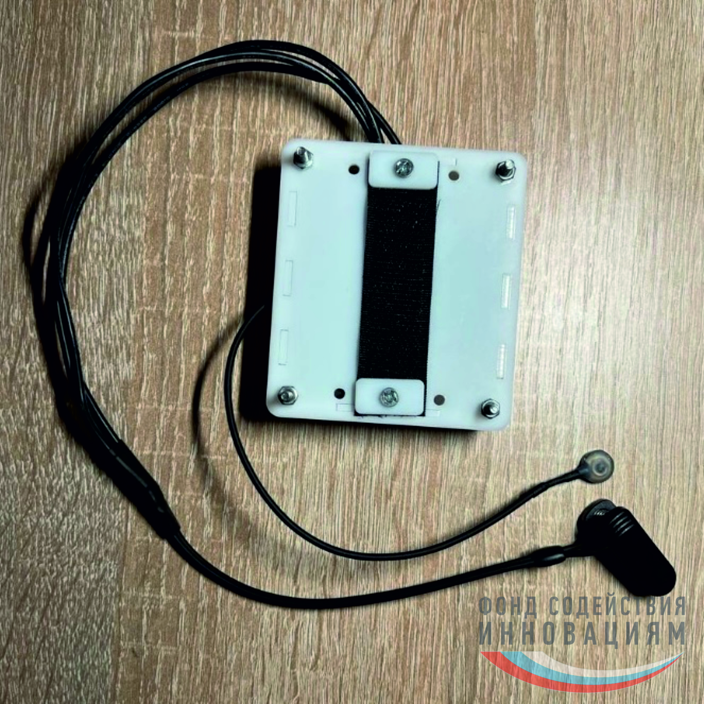
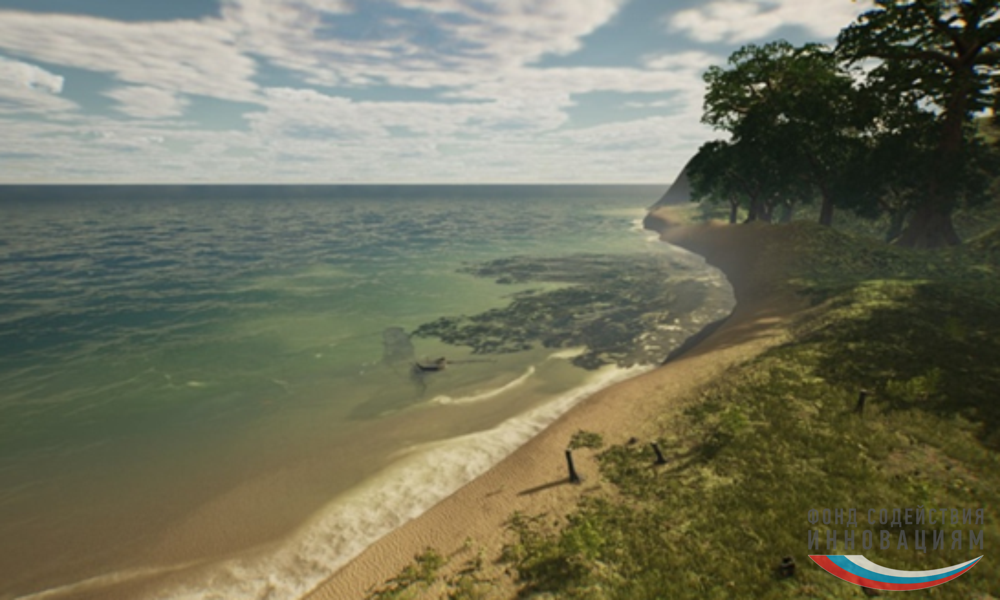

НейроВР — нейротехнологии для виртуальной реальности
Программно-аппаратный комплекс синхронизирует ЭЭГ-мониторинг с VR-сценарием, регистрирует нейрофизиологические паттерны в реальном времени и помогает адаптировать цифровую среду под состояние человека.

Иммерсивные сцены
VR-среда, которая реагирует на когнитивное состояние


Лабораторный образец аппаратной части нейроинтерфейса

О проекте
От лабораторной идеи к прикладной платформе
НейроВР стирает грань между человеком и цифровым пространством: не просто погружает в виртуальную реальность, а помогает ей чувствовать, понимать и учитывать индивидуальные особенности пользователя.
Комплекс объединяет интерфейс «мозг-компьютер», VR-устройства и аналитический модуль, который превращает нейросигналы в понятные количественные показатели.
Это позволяет оценивать, как виртуальная среда влияет на пользователя: от положительных эффектов обучения и реабилитации до ранней индикации стресса, переутомления и повышенной возбудимости.
- адаптация сценариев в реальном времени по ЭЭГ-паттернам
- масштабируемое решение для медицины, образования и игровой индустрии
- переход нейротехнологий из исследований в понятный продукт

Демонстрация сцены
Преимущества
НейроВР закрывает задачи трех ключевых аудиторий
Система создана сразу для нескольких сценариев: она одинаково сильна в пользовательском опыте, исследовательской аналитике и медицинской практике.
Пользователи VR
Более бережное и персонализированное погружение: виртуальная среда учитывает состояние пользователя и помогает снижать перегрузку
Разработчики и исследователи
Инструменты для сбора метрик, потоковой передачи данных и быстрой интеграции с Unreal Engine и Matlab без сложностей
Медицина и реабилитация
Поддержка клинических и домашних сценариев нейрореабилитации с объективным контролем состояния и понятной визуализацией параметров
Комплекс
Аппаратная часть, аналитика и готовность к интеграции
НейроВР сочетает мобильный нейроинтерфейс с беспроводной передачей данных, программный модуль на Python и интерфейс, который помогает следить за качеством контакта электродов, зарядом батареи и динамикой сигнала в реальном времени.

Регистрирует паттерны пользователя
Мобильное устройство считывает электрическую активность мозга и передает данные на компьютер по Bluetooth для анализа в реальном времени.
Показывает понятные количественные показатели
Интерфейс визуализирует сигналы, помогает контролировать состояние системы и формирует данные для исследовательских и прикладных задач.
Быстро встраивается в существующие VR-сценарии
Комплекс интегрируется с Unreal Engine через готовые плагины и может использоваться в медицине, образовании, играх и пользовательских исследованиях.
Сцены проекта
Виртуальные сцены
Здесь собраны ключевые среды проекта: от мягких иммерсивных сценариев до более насыщенных пространств с высокой когнитивной нагрузкой.

Сцена 1
Иммерсивная природная среда
Подходит для сценариев восстановления, наблюдения и мягкой адаптации
Сцена 2
Городское окружение
Сценарий для моделирования более сложной когнитивной нагрузки
Сцена 3
VR парк
Среда для показа работы комплекса и тонкой настройки поведения пользователя
Партнеры и приоритеты
Проект поддержан институтами развития и соответствует приоритетам РФ
Поддержка проекта
Проект развивается при поддержке ФГБУ «Фонд содействия развитию малых форм предприятий в научно-технической сфере».
Перейти на сайт фондаПензенский государственный университет
Академическая и исследовательская база проекта
Фонд содействия инновациям
Институциональная поддержка развития и масштабирования решения
Проект сочетает технологическую новизну с прикладной релевантностью для государственных и рыночных направлений развития:
Направлению Стратегии научно-технического развития РФ по переходу к персонализированной медицине и технологиям здоровьесбережения.
Национальным проектам «Наука» и «Здравоохранение»
Критическим технологиям НТР РФ: нано-, био-, информационным и когнитивным
Рынкам НТИ: Хелснет, Нейронет и Технет
Технологическим задачам и ожидаемым результатам дорожной карты цифровых технологий виртуальной и дополненной реальности.
Команда
Связаться с НейроВР
Алланова
Юлия Вячеславовна
Иванов
Александр Дмитриевич
Чернышов
Денис Сергеевич
Обратная связь
Открыты к партнерствам, обсуждениям и презентациям проекта
Если хотите обсудить внедрение, исследовательский трек или развитие программно-аппаратного комплекса, свяжитесь с командой напрямую.